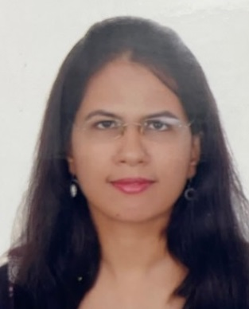

Assistant Professor (Senior Scale) February 2024 – Present
Department of Political Science, Ram Lal Anand College, University of Delhi

Dr. Soma Patnaik
Department of Political Science
Ram Lal Anand College, University of Delhi
Somapatnaik.ps@rla.du.ac.in
Ram Lal Anand College, University of Delhi, New Delhi
+919868329719
Jawaharlal Nehru University, New Delhi
2020
Centre for International Politics, Organisation and Disarmament, Jawaharlal Nehru University
2016
Jawaharlal Nehru University, New Delhi
2013
Lady Shri Ram College, University of Delhi
2011
International Relations
Comparative Politics
Political Leadership & Sub-altern Studies
Department of Political Science, Ram Lal Anand College, University of Delhi
Department of Political Science, Ram Lal Anand College, University of Delhi
Department of Political Science, Sri Aurobindo College (Day), University of Delhi
Co-investigator in Bridging Climate Policy Gaps: Urban Farmers and Ragpickers' Lived Experiences in Delhi (2024–25). Funded by In-house College Research Grants, Ram Lal Anand College, University of Delhi.